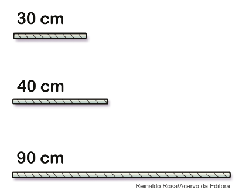

149
CAPÍTULO 3 - Máximo divisor comum (mdc)
A professora de música do 6.º ano reuniu todos os alunos para ensaiar um recital em homenagem aos pais. Ao todo, são 114 meninas e 95 meninos, que ficarão divididos em grupos. A professora quer formar grupos de meninas e grupos de meninos.
1. Troque ideias com um colega e expliquem como a professora pode saber quantos alunos ficarão em cada grupo, sabendo que cada grupo deverá ter o mesmo número de alunos e que esse número deverá ser o maior possível.

Observe a seguir os divisores dos números 114 e 95.
Divisores de 114: 1, 2, 3, 6, 19, 38, 57, 114.
Divisores de 95: 1, 5, 19, 95.
Os divisores comuns entre 114 e 95 são 1 e 19. Como o número procurado deve ser o maior divisor possível entre os dois, temos que o máximo divisor comum entre 114 e 95 é 19, e o representamos da seguinte forma:
mdc (114, 95) = 19
Portanto, a professora poderá formar 6 grupos com 19 meninas e 5 grupos com 19 meninos.
150
Exemplos:
► mdc (20, 30) = ?
Divisores de 20: 1, 2, 4, 5, 10, 20
Divisores de 30: 1, 2, 3, 5, 6, 10, 15, 30
Divisores comuns: 1, 2, 5, 10 mdc (20, 30) = 10
► mdc (18, 36, 54) = ?
Divisores de 18: 1, 2, 3, 6, 9, 18
Divisores de 36: 1, 2, 3, 4, 6, 9, 12, 18, 36
Divisores de 54: 1, 2, 3, 6, 9, 18, 27, 54
Divisores comuns: 1, 2, 3, 6, 9, 18
mdc (18, 36, 54) = 18
► mdc (20, 30) = ?
mdc (20, 30) = 2 ∙ 5 = 10
► mdc (18, 36, 54) = ?
mdc (18, 36, 54) = 2 ∙ 3 ∙ 3 = 18
151
ENCONTRE SOLUÇÕES
1. Pretende-se cortar os três barbantes representados a seguir em pedaços que tenham o mesmo tamanho, de modo que cada um tenha o maior comprimento possível.
a) Quanto medirá cada pedaço?
b) Quantos pedaços serão ao todo?
2. Aplicando a técnica da decomposição em fatores primos, calcule o mdc dos números a seguir.
a) 42 e 60
b) 78 e 96
c) 35 e 45
d) 120 e 160
e) 210 e 234
f) 16, 30 e 40
g) 48, 60 e 130
h) 15, 55 e 75
3. Calcule e responda em seu caderno:
a) mdc (4, 9)
b) mdc (5, 12)
c) mdc (13, 19)
d) mdc (11, 18)
► O que você observou de semelhante entre os máximos divisores comuns que calculou?
Quando o mdc de dois números é igual a 1, dizemos que eles são primos entre si.
4. Carlos é músico e está reorganizando os discos de vinil de sua coleção. Ele possui 175 discos lançados antes de 1970, 210 discos lançados entre 1970 e 1990 e 280 discos lançados depois de 1990. Ele pretende colocar a mesma quantidade de discos, sendo a maior possível, em prateleiras separando- os de acordo com o período de lançamento. Quantas prateleiras serão necessárias?
5. Nicolas possui um terreno com 42 m de frente por 56 m de fundo. Ele pretende plantar árvores ao redor do terreno de tal forma que as distâncias entre elas sejam iguais e a maior possível. Qual será a distância entre as árvores plantadas?
6. Leia as afirmações a seguir e diga se são verdadeiras ou falsas.
a) Os números 35 e 24 são números primos entre si.
b) O maior divisor comum entre 30 e um número natural x pode ser 60.
c) Os números 11 e 121 são números primos entre si.
d) O maior divisor comum entre 24 e um número natural y pode ser 12.
7. Observe a quantidade de alunos que há em sua turma. Elabore um problema envolvendo o conceito de máximo divisor comum para uma situação que você irá criar. Em seguida, troque seu caderno com um colega para que ele resolva o problema elaborado por você. Juntos, verifiquem se os problemas resolvidos estão corretos.